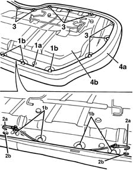
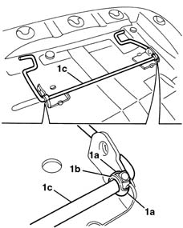

7050A56 rear seat cushion ribbing - r r
- Path
- Procedures > 70 FITTINGS > 7050 REAR SEATS > 7050A rear seat assembly > 7050A56 rear seat cushion ribbing - r r
- Kind
- repair procedure (removal / refitting; the operation number is the code)
- Applies to
- all engines; all production periods
- Interactive page
- https://sloeber94.github.io/elrnDB-lYpsln/en/#/2429649
Applies to: all engines; all production periods
 Removing
Removing
 Refitting
Refitting7050A20 one-piece rear seat cushion - r r
1. Fold the cushion over and release the edge (1a) of the cushion cover from the perimeter retainers (1b).
2. Release the hooks (2a) for the rods for the edge of the cover from the seats (2b).
3. Release the edge of the cushion from the remaining hooks.
4. Remove the cover and upholstery (4a) from the frame (4b).

Applies to: all engines; all production periods
1. If necessary, release the retainers (1a) for the bushes (1b) and remove the cushion retaining clips (1c).

Applies to: all engines; all production periods
Refitting
RemovingCheck that the frame is not damaged.
If removed, position the retaining clips and attach the bush retainers.
Position the cushion on the upholstery attaching the edge using the hooks and the retainers.